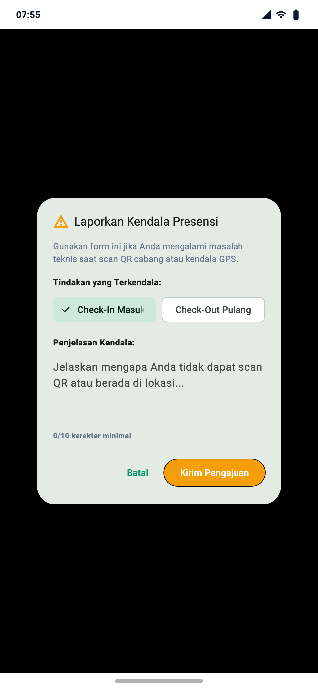

Formulir Pop-up Pelaporan Kendala Presensi
Kapan Fitur Pengecualian Digunakan?
Gunakan formulir ini hanya jika Anda telah berada di lokasi fisik kantor cabang tetapi mengalami kendala teknis darurat: sinyal GPS hilang di basement/ruang tertutup, lensa kamera HP bermasalah, atau layar display QR kantor padam listrik.
Langkah Mengirimkan Laporan:
- Pada tab Presensi, tekan tombol teks: Terkendala Presensi? Ajukan Pengecualian ke Manager.
- Pilih tindakan yang terkendala: Check-In Masuk atau Check-Out Pulang.
- Tuliskan uraian kendala secara jujur dan detail pada kolom teks (wajib minimal 10 karakter).
- Tekan tombol Kirim Pengajuan. Laporan otomatis terkirim ke panel verifikasi Manajer Cabang.
Konsekuensi Hasil Evaluasi Manajerial:
| Keputusan Review | Dampak pada Status Absensi | Konsekuensi Payroll |
|---|
| DISETUJUI (APPROVED) |
Kehadiran disahkan sebagai hadir kerja sesuai jam kedatangan fisik. |
Gaji pokok utuh, tidak ada denda mangkir. |
| DITOLAK (REJECTED) |
Status absensi ditetapkan sebagai MANGKIR / DITOLAK (ABSENT / REJECTED). |
Dikenakan Potongan Alpha resmi pada kalkulasi slip gaji bulanan. |
Peringatan Integritas: Pengajuan pengecualian fiktif atau tanpa dasar valid akan ditolak tegas oleh atasan dan berakibat pemotongan denda alpha pada penghasilan bulanan.